NLP期末复习¶
Part1：词法分析¶
分词¶
-
解释：将句子、段落等文本分解为有意义的字词单元，方便后续的处理分析
-
分词算法（可能考）：
-
最大匹配法：从左到右匹配词库中的单词，匹配到最长的词为止
缺点：
1.完全依赖词典
2.没有基于文本语义的理解，消歧能力弱
-
最大概率法：见nlp资料
上面两个都是查词典法
构造词典的方法：
- 前缀树

每个结点包含一个字符； 从root到某结点，构成字符串； 结点的子结点不相同
- AC自动机

- 序列标注法：没有
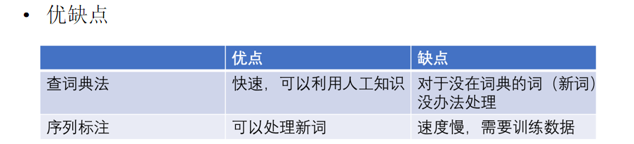
-
N-最短路径法：没有
-
新词发现算法：

其中的词频、自由度、凝固度的计算如下。选取abc作为文本文段。

新词发现的必要性：未登录词 计算候选词的频率，凝固度（互信息），自由度（信息熵）作为特征：无监督 特征高于阈值的候选词，作为结果词，阈值需要人工调节 结果词和词典对比，不在词典的词作为新词
词性标注¶
-
解释：·就是在给定句子中判定每个词的语法范畴，确定其词性和浅层的歧义消除。并加以标注的过程
-
基于HMM的词性标注：（可能算法题）
-
参数：

- 转移概率：(隐含状态之间存在转换概率)

- 发射概率：（隐含状态与可见状态之间的概率）

- 进行预测（维特比算法 无环有向图最优路径算法）

-
HMM的应用
中文分词 实体识别
-
伪代码实现
定义HMM模型:
S = [s1, s2, ..., sm] // 状态集合
O = [o1, o2, ..., on] // 观测集合
A = [[a11, a12, ..., a1m],
[a21, a22, ..., a2m],
...,
[am1, am2, ..., amm]] // 状态转移概率矩阵
B = [[b1(o1), b2(o1), ..., bm(o1)],
[b1(o2), b2(o2), ..., bm(o2)],
...,
[b1(on), b2(on), ..., bm(on)]] // 观测概率矩阵
Algorithm Viterbi(O, S, A, B):
Input: 观测序列 O, 状态集合 S, 状态转移概率矩阵 A, 观测概率矩阵 B
Output: 最可能的状态序列 S*
初始化:
for each state si in S:
delta[1][si] = pi(si) * b[si][o1] //初始概率
递推:
for t = 2 to n:
for each state sj in S:
delta[t][sj] = max(delta[t-1][si] * a[si][sj] * b[sj][ot] for si in S)
psi[t][sj] = argmax(delta[t-1][si] * a[si][sj] for si in S)
回溯:
S* = [argmax(delta[n][si] for si in S)]
for t = n-1 to 1:
S*[t-1] = psi[t][S*[t]]
Return S*
看作给定观测值（词），求隐状态（词性）的问题
词义排歧¶
- 解释：确定一个歧义词的哪一种语义在一个特殊的使用环境中被调用

Part2 句法分析¶
句法结构（可能出简答题）¶
- 句法成分树
- 节点是什么？边代表什么意思？
节点表示**句子中的成分**，边表示不同节点（成分）之间的**句法关系**
通常有两种主要类型的节点：短语节点（Phrase Node）和词汇节点（Lexical Node）。
- 短语节点（Phrase Node）：这些节点表示句子中的短语或成分，如名词短语（NP）、动词短语（VP）、介词短语（PP）等。短语节点可以包含其他短语节点或词汇节点作为其子节点，从而形成嵌套的结构。
- 词汇节点（Lexical Node）：这些节点表示句子中的单词或词汇项。词汇节点是句法成分树的叶子节点，它们没有子节点。
边表示不同节点之间的句法关系，通常有以下一些常见的关系：
- 父子关系（Parent-Child Relationship）：边从一个节点指向其子节点，表示这两个节点之间是一个父子关系。例如，一个动词短语节点可能有若干个名词短语节点作为子节点。
- 修饰关系（Modifier Relationship）：边表示一个节点对另一个节点的修饰关系。例如，一个形容词短语节点可能通过边与一个名词节点相连，表示形容词修饰了名词。
- 并列关系（Coordination Relationship）：边表示两个节点处于并列关系。例如，两个名词短语节点通过边相连，表示它们在结构上是并列的。
依存结构（要掌握）简答题？¶
- 依存树

- 节点是什么？边代表什么意思？
在依存树中，节点表示**句子中的词语**，而边表示词语之间的**依存关系**。
- 每个节点代表句子中的一个词语。这个词语通常是句子的一个单词，可能包括标点符号。节点可以携带附加信息，如词性标签、词汇性质等。
- 每条边表示两个词语之间的依存关系。在依存树中，依存关系通常分为两种类型：
- 标签化依存关系（Labeled Dependency Relation）：每条边上带有一个标签，表示依存关系的具体类型。例如，一个名词可能依赖于一个动词，标签可以表示这是一个主谓关系（nsubj）。
- 无标签依存关系（Unlabeled Dependency Relation）：边没有附加标签，只表示两个词语之间存在依存关系，但不具体说明是什么类型的依存关系。
Part3：词向量、语言模型¶
词向量的概念¶
- 解释：将一个词映射到一个向量空间，用多维向量来表示
语言模型的概念¶
- 解释： 给定上下文，去预测下面一个词或者一段文本出现的概率

零概率问题：
由于数据稀疏造成，在训练集中而未在测试集中出现的n元短语，会造成含有该短语的句子的出现概率为0
语言模型的参数就是**词的概率以及给定前几个词情况下的条件概率**
神经网络与传统语言模型：

word2vec模型架构¶
两种无监督训练方法（模型要能画出来）
- 倒三角架构（CBOW）

功能：通过上下文预测当前词出现的概率
- 三角架构（skip-gram）

功能：通过当前词预测上下文
简答？
简述两种方式训练词向量的区别
| CBOW | Skip-gram | |
|---|---|---|
| 输入 | 上下文词（多个） | 目标词 |
| 输出 | 目标词的概率分布 | 上下文词的概率分布 |
| 训练数据样本 | (上下文, 目标词) | (目标词, 上下文词) |
| 训练效果 | 小规模数据集效果较好 | 大规模数据集效果较好 |
| 数据利用率 | 利用上下文信息进行训练 | 通过目标词生成多个训练样本 |
| 计算效率 | 相对较快，因为考虑整个上下文的信息 | 相对较慢，因为需要生成多个样本 |
算法？
- CBOW
Algorithm CBOW:
Input: 句子数据集(dataset_s), 窗口大小(window_size)
Output: Trained word vectors
for sentence in dataset_s:
for target_word_index, target_word in enumerate(sentence):
context_words = get_context_words(sentence, target_word_index, window_size)
input_data = sum([one_hot(context_word) for context_word in context_words])
label = one_hot(target_word)
# 梯度下降函数
fit(x=input_data, y=label)
return trained word vectors
- SKIP- GRAM
for sentence in dataset_s:
for i, word in enumerate(sentence):
for j, target_word in enumerate(sentence):
if i == j:
continue
input_data = one_hot(word)
label = one_hot(target_word)
fit(x=input_data, y=label)
方案设计？
训练词向量的原理¶
原理：把每个词表征为k维的实数向量（每个实数都对应着一个特征，可以是和其他单词之间的联系），将相似的单词分组映射到向量空间的不同部分，拥有差不多上下文的两个单词的意思往往是相近的
训练原理：
- CBOW (Continuous Bag of Words)：
- 输入： 给定上下文窗口内的词语（上下文词），尝试预测目标词（中心词）。
- 输出： 目标词的概率分布，表示在给定上下文条件下，目标词的可能性。
- 步骤：
- 将上下文词的词向量进行平均或求和，得到上下文的表示。
- 将上下文表示作为输入，通过softmax函数预测目标词的概率分布。
- 最小化损失函数，使得模型的预测概率尽可能接近实际目标词的分布。
- Skip-gram：
- 输入： 给定目标词，尝试预测上下文词。
- 输出： 上下文词的概率分布，表示在给定目标词条件下，各个上下文词的可能性。
- 步骤：
- 将目标词的词向量作为输入。
- 通过softmax函数预测目标词的上下文词的概率分布。
- 最小化损失函数，使得模型的预测概率尽可能接近实际上下文词的分布。
训练方法：
- Negative Sampling： 为了加速训练过程，Word2Vec使用了负采样（Negative Sampling）的技术。在每次训练迭代中，对每个正例样本（目标词-上下文词对），随机选择一小部分负例样本（不包含在上下文窗口内的词），通过负例样本的预测来进行梯度更新，以降低计算成本。
- 层次化Softmax： 在大词汇量的情况下，计算全局的Softmax损失可能会很耗时。为了解决这个问题，Word2Vec引入了层次化Softmax，使用树状结构来表示词汇，降低了计算复杂度。
- 学习率调整： Word2Vec通常使用学习率逐渐减小的策略，例如，初始时较大的学习率，然后随着训练的进行逐渐减小，以更好地收敛模型。
Word2Vec通过这样的训练过程，使得词汇中的每个词都能够在向量空间中得到一个连续分布的表示，能够捕捉到词语之间的语义关系。这些学到的词向量可以应用于各种自然语言处理任务。
Part4：信息抽取（方案设计）¶
关系抽取的概念（会用神经网络构建关系抽取系统）¶
解释： 识别文本中实体之间的关系，这些关系可以是预定义的、有结构的，也可以是任意的、无结构的。
实体识别的概念（会用神经网络构建实体识别系统）¶
解释：指识别文本中具有特定意义的实体，主要包括人名、地名、机构名、专有名词等。简单来说，就是识别自然文本中的实体指称的边界和类别。（从非结构化的输入文本中抽取实体）
命名实体识别任务可以看作是序列标注任务
前馈神经网络、卷积神经网络、循环神经网络、LSTM的模型架构¶
- 前馈神经网络
介绍： FNN是一种最基本的神经网络结构，由输入层、隐藏层和输出层组成。信息在网络中单向传播，没有反馈回路。
特点： 适用于处理静态数据，对于序列或时间相关的信息处理相对有限。
就是循环神经网络单独的一层，就不多说了
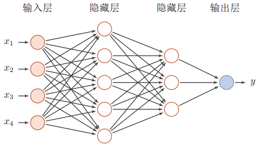
- 卷积神经网络cnn
介绍： CNN主要用于图像处理任务，通过卷积层和池化层有效提取图像的特征。每个卷积核可以捕捉局部的空间特征，从而实现对图像的高效抽象。（输入-卷积-池化-全连接-输出）
特点： 在图像处理、计算机视觉领域表现出色，能够减少参数数量，对平移不变性有良好的处理能力。
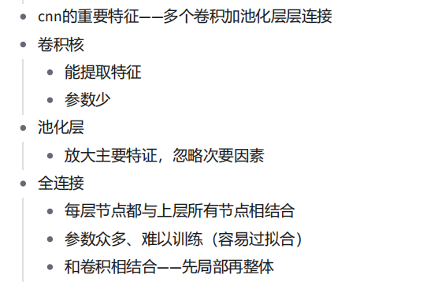

全连接层就是传统的全连接神经网络
卷积核的特征提取能力（学习词和词的上下文特征）：多层级联实现多尺度特征学习（多个卷积层），同时能够减少训练参数
池化层用来最大化主要特征（降维，获得定长特征向量），避免过拟合（有两种池化方式，一个是max-pooling，另外一个是average-pooling）
问题：
水平方向延申， 隐层数量多，但是未考虑单个隐层在时间上的变化
- 循环神经网络
介绍： RNN通过引入循环结构，能够处理序列数据。每个时间步 的隐藏状态会包含之前时间步的信息，使得网络能够考虑上下文信息。
特点： 适用于序列数据处理，但在长距离依赖关系和梯度消失问题上存在一定的挑战。
看似级联，实则是沿着时序，建立了网络隐藏层之间的时序关联。每一时刻的状态s2不仅取决于当前时刻的输入，还取决于上一时刻s1的状态
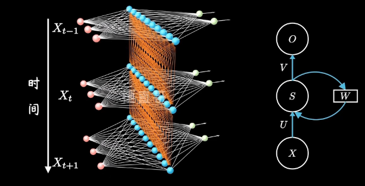
训练方式和传统的神经网络一样，采用误差反向传播与梯度下降来更新权重
- lstm
介绍： LSTM是为解决RNN中长距离依赖和梯度消失问题而设计的。引入了门控机制，包括输入门、遗忘门和输出门，能够更好地捕捉长期依赖关系。
特点： 对于处理长序列、长距离依赖关系表现优异，解决了传统RNN的一些问题。

相较于rnn，lstm新增了时间链ct（相当于日记本，记录长时记忆）,与短时记忆st之间建立联系

f1是删除门：根据xt和st-1来过滤重要特征，忽略无关信息。记忆细胞中多少信息需要被删除
f2是输入门：根据xt和st-1决定。多少信息添加到记忆细胞中
对比分析：
| 特点 | FNN | CNN | RNN | LSTM |
|---|---|---|---|---|
| 参数共享 | 无参数共享 | 卷积核参数共享 | 时间步参数共享 | 时间步参数共享，门控结构 |
| 处理能力 | 适用于静态数据 | 适用于图像处理、计算机视觉 | 适用于序列数据，但长距离依赖挑战 | 适用于长序列、长距离依赖 |
| 计算效率 | 简单，计算效率高 | 通过参数共享减少计算量 | 存在时间步依赖，计算效率相对低 | 相对于传统RNN，计算效率提高 |
注意力的运算过程¶
解释：将有限的注意力集中在重点信息上，从而节省资源，快速获得最有效的信息。
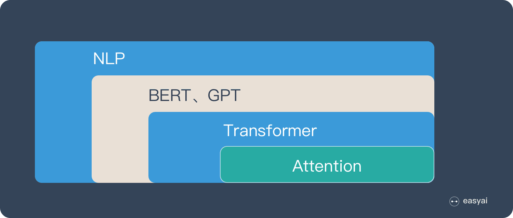
注意力实际上就是**权重**

需要三个指定的输入Q(query)，K(key)，V(value)，然后通过公式得到注意力的计算结果，这个结果代表query在key和value作用下的表示。其中Q、K、V由输入X分别于其参数矩阵W、K、W 相乘得到

这其实是自注意力机制
信息抽取系统的评估（注重评价指标的应用场景！）¶
P 、 R 、F1
Part5：情感分析¶
aespect情感分析的概念¶
解释：一种细粒度的情感分析任务，旨在识别一条句子中一个指定方面 (Aspect)的情感极性。
因为一个句子中可能含有多个不同的方面，每个方面的情感极性可能不同。
用神经网络构建情感分析系统¶
ATAE-BILSTM（舆情实验课）
Part6：篇章分析（简答）¶
掌握一个东西：NLP中如何表示一个篇章
理解修辞结构理论（RST）¶
修辞结构理论是有关篇章分析和生成的理论
该理论认为，连贯的篇章由不同层次的修辞关系组成，并且可以表示为一种**树形**结构。从篇章单位（EDU）开始，修辞结构树逐步覆盖整个篇章，形成层次化的篇章结构树。层次的复杂程度与篇章语义的复杂程度相关，语义越复杂，层次越多。如下所示。
基础语篇单位（EDU）指什么¶
解释：基本篇章单元是句子内不重叠的文本片段
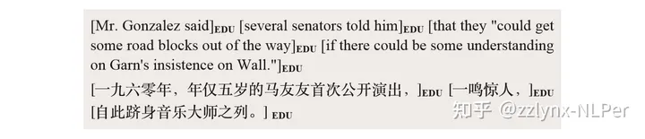
EDU 分割即“给定一个句子（任意语言），如何将它切割成若干个基本篇章单元“
核心（nucleus）和卫星（satellite）¶
是两个篇章单位。
**核心**是篇章最重要的部分，表示中心信息的单元，具有相对完整的语义。
**卫星**是传达支撑信息的其他单元，用于补充说明核心部分，脱离核心的卫星部分通常是没有意义的。
每个修辞关系可以联结两个或多个EDU。 最基本的修辞关系有两种，分别是**单核关系**和**多核关系**，篇章中单核关系占主要部分。
-
具有不对称性的核心-卫星关系nucleus-satellite relation， 也称单核关系，修辞关系联结的单元存在主次之别；
-
无主次之分的多核关系 multinuclear relation，修饰关系联结的单元中无所谓谁是核心谁是卫星。 对比contrast关系和列表关系list都是典型的多核关系
大致来说，完成篇章分析步骤如下：
- 篇章分成基础语篇单位EDU
- 判断每个EDU是核心还是卫星
- 根据核心和卫星的特征来判断修辞关系，特征可以是词性，依存关系等
- 构建篇章结构树
Part7：自然语言生成¶
几个重点： 摘要系统、机器翻译系统、对话系统
自然语言生成模型的架构（s2s模型）¶
解释：字面意思，输入一个序列，输出另一个序列，比如在机器翻译中，输入英文，输出中文。这种结构最重要的地方在于输入序列和输出序列的长度是可变的。而Seq2Seq模型也经常在输出的长度不确定时采用。
seq2seq是一个**由两个循环神经网络RNN组成的端到端模型**：
(1) 一个**编码器**(encoder)，将模型的输入序列作为输入，然后编码固定大小的“上下文向量”。
(2) 一个**解码器**(decoder)，使用来自解码器生成的上下文向量作为从其生成输出序列的“种子”
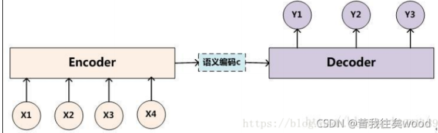
此处encoder和decoder都是RNN，通常为lstm和gru
-
两种方式
-
语义向量不参与decoder

encoder负责**将输入的文本序列压缩成指定长度的向量**，即语义向量C，这个向量可以看作输入序列的语义。
decoder将语义向量C作为初始状态输入到Decoder的RNN中，得到输出序列。此时**上一时刻的输出会成为当**
前时刻的输入，而且语义向量C只作为初始状态参与运算，后面运算与C无关。
- 语义向量参与decoder

**语义向量**C参与序列所有时刻的运算，上一时刻的输出仍然作为当前时刻的输入，但C参与每个时刻的运算。
Decoder的每一次解码又会作为下一次解码的输入，但这样会导致一个问题，如果其中一个RNN单元解码出现误差，那么这个误差就会传递到下一个RNN单元，使训练结果误差越来越大。所以可以引入attention机制。
生成模型的训练目标函数¶

交叉熵损失
生成模型的解码算法：beam-search、 top-k采样、 top-p采样¶
简答题？
beam-search¶
Beam Search只用于测试，不用于训练过程。
当模型训练好后，给其输入一段话，其输出的每个单元的 y 给的是各个词的概率，如何根据概率选词且如何判断是否句子终止呢？
采取的方法是在每个时间步，选取当前时间步条件概率最大的k个词，作为该时间步的候选输出序列。如下图，k选择2，第一步p(A|c)和p(C|c)最大；第二步 P(AB|c),P(CE|c)最大；第三步P(ABD|c),P(CED|c)最大。这样，得到的最终候选序列就是各个时间步的得到的序列的集合，下图即为6个 {A, C, AB, CE,ABD, CED}。那么最终预测结果就是要从这6个中选出分最高的。按概率算的话，序列越长的概率肯定越小，所以一般最后分数计算会有一个和序列长度有关的惩罚系数，如下。

top-k采样¶
Top-k Sampling:
基本思想： 在每个时间步，从模型生成的概率分布中选择概率最高的前k个词作为候选，然后
从这些候选中随机选择一个作为生成的词。
优势： 引入了随机性，使得生成的序列更加多样化。
缺点： 可能导致一些不太可能的词被选中，从而生成不合理的序列。
top-p采样¶
Top-p Sampling:
基本思想： 在每个时间步，从模型生成的概率分布中选择概率累积最高的一些词，直到累积概
率超过阈值p。然后在这些词中随机选择一个作为生成的词。
优势： 可以在保持多样性的同时，更加控制生成的稳定性。
缺点： 可能导致生成相对较短的序列，因为累积概率很容易达到阈值。
与 top-k 固定选取前 k 个 tokens 不同，top-p 选取的 tokens 数量不是固定的，这个方法是设定一个概率阈值。例如：将 top-p 设定为 0.15，即选择前 15% 概率的 tokens 作为候选。如下图所示，United 和 Netherlands 的概率加起来为 15% ，所以候选词就是这俩，最后再从这些候选词里，根据概率分数，选择 united 这个词。

生成模型的评估： BLEU、ROUGE¶
- BLEU
是一种用于评估生成文本与参考（标准）文本之间相似度的指标，通常用于机器翻译等生成任务。BLEU（Bilingual Evaluation Understudy）的分数通常在0到1之间，但可能会偏向于接近0。BLEU的分数越高表示生成文本与参考文本越相似。理想情况下，最佳性能为1，表示生成文本完全与参考文本匹配。下面是BLEU计算的基本过程：
-
N-gram计算：计算生成文本和参考文本中的n-gram（连续的n个词）的数量。通常，BLEU
考虑1-gram到N-gram。很容易理解，就是像下面这样

一般情况1-gram可以代表原文有多少词被单独翻译出来，可以反映译文的**充分性**，2-gram以上可以反映译文的**流畅性**，它的值越高说明可读性越好

大致知道这个指标是干啥的就行 计算公式就算了。。。。
- ROUGR
ROUGE基于摘要中n元词(n-gram)的共现信息来评价摘要，是一种面向n元词召回率的评价方法。ROUGE准则由一系列的评价方法组成，包括ROUGE-N(N是n-gram中n，取值有1，2，3，4)，ROUGE-L，ROUGE-S, ROUGE-W，ROUGE-SU等。

可以看出，ROUGE与召回率的定义很相似。
其余的指标就算了，也看不懂是啥。。。。
用神经网络构建文本生成系统（感觉今年肯定会考！）¶
这个猜测就是叫用Transformer/GPT去构建？
Part8：预训练模型¶
解释： 什么是预训练？使用大规模无人工标注的数据对模型进行自监督训练，从中提取出尽可能多的共性特征，从而让模型对特定任务的学习负担变轻
finetune：什么是微调？在下游任务上继续训练预训练模型
transformer架构：（s2s with attention）¶
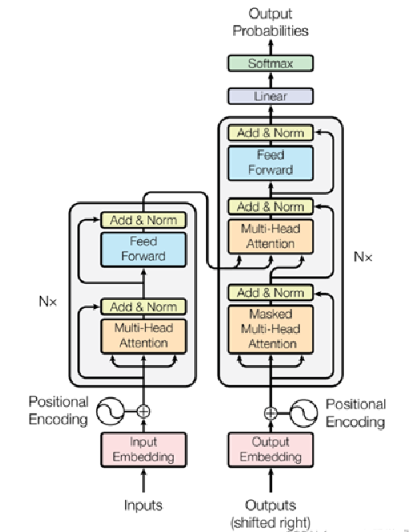
Transformer 训练过程与 seq2seq 类似，首先 Encoder 端得到输入的 encoding 表示，并将其输入到 Decoder 端做交互式 attention，之后在 Decoder 端接收其相应的输入，经过多头 self-attention 模块之后，结合 Encoder 端的输出，再经过 FFN，得到 Decoder端的输出之后，最后经过一个线性全连接层，就可以通过 softmax 来预测下一个单词(token)，然后根据 softmax 多分类的损失函数，将 loss 反向传播即可，所以从整体上来说，Transformer训练过程就相当于一个有监督的多分类问题。需要注意的是，Encoder 端可以并行计算，一次性将输入序列全部 encoding 出来，但 Decoder端不是一次性把所有单词(token)预测出来的，而是像 seq2seq一样一个接着一个预测出来的。（BERT和GPT的特点）
-
encoder
-
self-attention
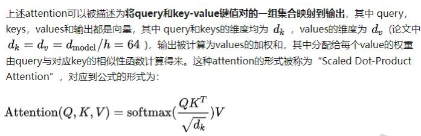
self-attention，是一种通过自身和自身相关联的 attention 机制，从而得到一个更好的representation 来表达自身，self-attention 可以看成一般 attention 的一种特殊情况。在 self-attention 中， Q=K=V,序列中的每个单词(token)和该序列中其余单词(token)进行 attention 计算。self-attention 的特点在于无视词(token)之间的距离直接计算依赖关系，从而能够学习到序列的内部结构。
引入 Self Attention 后会更容易**捕获句子中长距离的相互依赖的特征**，因为如果是**RNN 或者 LSTM，需要依次序序列计算，对于远距离的相互依赖的特征，要经过若干时间步步骤的信息累积才能将两者联系起来，而距离越远，有效捕获的可能性越小。**
但是 Self Attention 在计算过程中会直接将句子中任意两个单词的联系通过一个计算步骤直接联系起来，所以远距离依赖特征之间的距离被极大缩短，有利于有效地利用这些特征。除此外，Self Attention 对于增加计算的并行性也有直接帮助作用。
- multi-head self attention
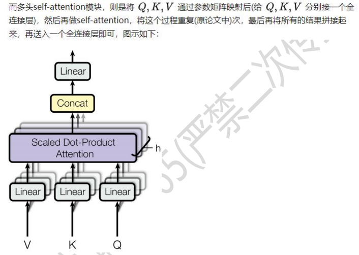
进行 Multi-head Attention 的原因是将模型分为多个头，形成多个子空间，可以让模型去关注不同方面的信息，最后再将各个方面的信息综合起来。其实直观上也可以想到，如果自己设计这样的一个模型，必然也不会只做一次 attention，多次 attention 综合的结果至少能够起到增强模型的作用，也可以类比 CNN 中同时使用多个卷积核的作用，直观上讲，多头的注意力有助于网络捕捉到更丰富的特征/信息。
- feed-forward
由两个线性变换组成，中间有一个 ReLU 激活函数
- add&norm

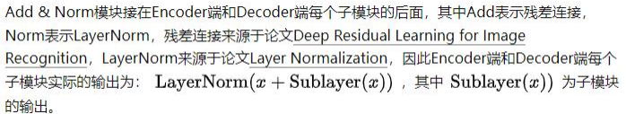

-
decoder
-
masked multi-head self attention
多头 self-attention 模块与 Encoder 端的一致，但是需要注意的是 Decoder 端的多头 self-attention 需要做 mask，因为它在预测时，是“看不到未来的序列的”，所以要将当前预测的单词(token)及其之后的单词(token)全部 mask 掉
-
encoder - decoder attention
多头 Encoder-Decoder attention 交互模块的形式与多头 self-attention 模块一致，唯一不同的是其 矩阵的来源，其 矩阵来源于下面子模块的输出(对应到图中即为 masked 多头self-attention 模块经过 Add & Norm 后的输出)，而矩阵则来源于整个 Encoder 端的输出，仔细想想其实可以发现，这里的交互模块就跟 seq2seq with attention 中的机制一样，目的就在于让 Decoder 端的单词(token)给予 Encoder 端对应的单词(token)“更多的关注(attention weight)”
-
后面结构同encoder
其他相关的¶
- 与LSTM/RNN的对比分析
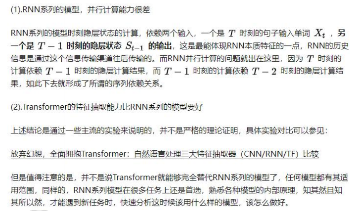
- 替代S2S？
seq2seq 最大的问题在于将 Encoder 端的所有信息压缩到一个固定长度的向量中，并将其作为 Decoder 端首个隐藏状态的输入，来预测 Decoder 端第一个单词(token)的隐藏状态。在输入序列比较长的时候，这样做显然会损失 Encoder 端的很多信息，而且这样一股脑的把该固定向量送入Decoder 端，Decoder 端不能够关注到其想要关注的信息。上述两点都是 seq2seq 模型的缺点，后续工作虽然对 seq2seq 模型有了实质性的改进，但是由于主体模型仍然为 RNN(LSTM)系列的模型，因此模型的并行能力还是受限，而 transformer 不但对 seq2seq模型这两点缺点有了实质性的改进(多头交互式 attention 模块)，而且还引入了 self-attention模块，让源序列和目标序列首先“自关联”起来，这样的话，源序列和目标序列自身的embedding 表示所蕴含的信息更加丰富，而且后续的 FNN 层也增强了模型的表达能力，并且Transformer 并行计算的能力是远远超过 seq2seq 系列的模型。
bert架构、预训练任务、什么是精调¶
- 架构


- 预训练任务
Maked LM 和 Next Sentence Prediction
- Maked LM
给定一句话，随机 Mask 掉这句话中的一个或几个词，要求根据剩余词汇预测被 Mask 掉的几个词是什么

在一句话中随机选择 15%的词汇用于预测。对于原句中被 Mask 掉的词汇，80%的情况会使用一个特殊符号**[MASK]替换，10%的情况下采用一个**任意词**替换，剩余 10%情况下保持**原词汇不变
这么做的优点是：在后续微调的过程中，语句并不会出现[MASK]标记，当预测词汇时，模型并不知
道输入对应位置的词汇是否为正确的词汇（10%的概率），这就迫使模型更多地依赖于上下文信息去
预测词汇，并且赋予模型一定的纠错能力。缺点：由于每批次数据中，只有 15%的标记被预测，这意味着模型需要更多的预训练步骤来收敛。
- Next Sentence Prediction
给定一篇文章中的两句话，判断第二句话在文本中是否紧跟在第一句话之后

实际上是段落重排序的简化版：只考虑两句话，判断是否是一篇文章中的前后句。在实际预训练过程中，文章作者从文本语料库中随机选择 50%正确语句对和 50%错误语句对进行训练，与 Masked LM 任务相结合，让模型能够更准确地刻画语句乃至整篇文章层面的语
义信息。
通过这两个任务的联合学习，可以使得 Bert 学习到的表征既有 token 级别信息，同时也包含了句子级别的语义信息。
猜测：CBOWvsMASK？
相同点：
CBOW 的核心思想是，给定上下文，根据它的上文 context-before 和下文 context-after 去
预测 input word。Bert 本质上也是如此。
不同点：
* 首先，在 CBOW 中，每个单词会称为 input word，而 Bert 中只有 15%的词会称为 input word。
* 其次，对于数据输入部分，CBOW 中的输入数据只有待预测单词的上下文，而 Bert 的输入是带有[MASK] token 的“完整”句子，也就是说 Bert 在输入端将待预测的 input word 用[MASK] token 代替了。
* 另外，通过 CBOW 模型训练后，每个单词的 word embedding 是唯一的，因此并不能很好的处理一词多异的问题；而 Bert 模型得到的 word embedding （token embedding）融合了上下文信息，就算是同一个单词，在不同的上下文环境下，得到的 word embedding 是不一样的。
- 精调
模型精调（Fine-tuning）和微调（Transfer learning）都是针对预训练模型进行模型优化的技术，但它们有一些区别。
模型微调（Transfer learning）是利用在一个任务中预训练好的模型在另一个相关任务上进行微调的过程。在微调过程中，模型的前几层通常是冻结的（即权重不再更新），只有最后几层需要调整以适应新的任务。这个过程可以快速提高模型的准确性，并且通常只需要较少的数据来完成训练。例如，可以使用在大型图像分类任务上预训练的模型，然后在小型图像分类任务上进行微调。
相反，模型精调（Fine-tuning）是指在一个特定任务上使用预训练模型，然后在该任务的训练数据上继续训练整个模型。在这种情况下，整个模型的权重都会被调整。这个过程需要更多的数据和计算资源，并且通常会产生更好的性能，但也需要更多的时间和精力来完成。
总的来说，微调是利用预训练模型的知识和特征来快速训练一个新的模型，而精调是对整个模型进行重新训练，以达到更好的性能。
bert的微调可以用于下面的4个场景：
句子语义相似度的任务；
多标签分类的任务；
针对翻译的任务；
文本生成的任务
- BERT微调
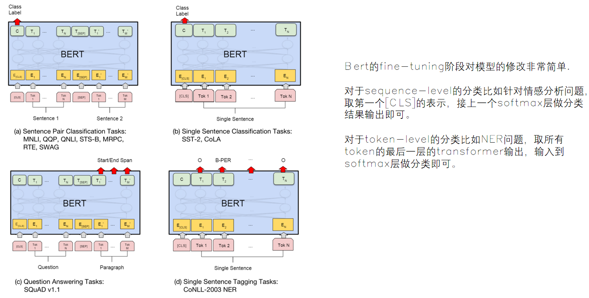
gpt-1架构、预训练任务¶
- 架构
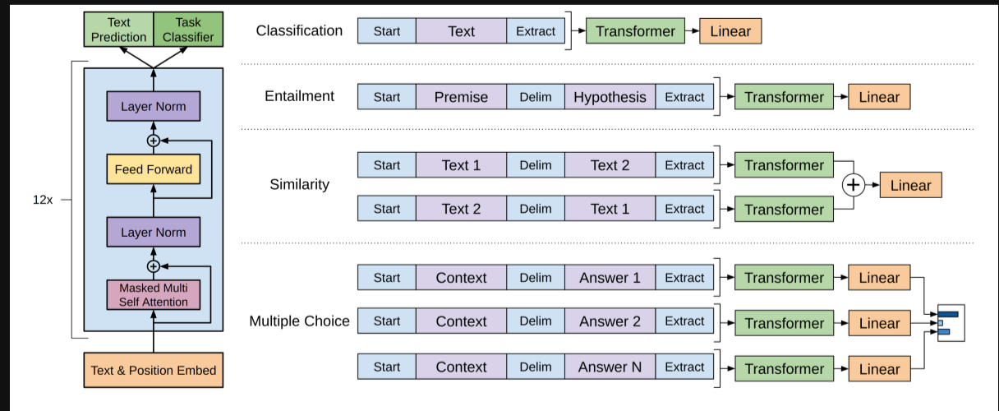
GPT-1的模型结构包括了12层解码器（decoder）和768维的隐状态向量。在每一层解码器中，GPT-1使用了多头自注意力机制和前向传播网络，用于学习上下文相关的词嵌入（contextual word embeddings）。在生成文本时，GPT-1使用了最终层解码器的输出作为预测结果。 * 预训练方法
GPT-1采用了大规模的无监督预训练方法，该方法称为语言建模（language modeling）。具体来说，GPT-1使用了一个基于Transformer解码器的自回归语言模型（auto-regressive language model），通过最大化文本序列的概率，预测下一个单词。
其余的大模型相关概念¶
- prompt
用于调用或触发大型语言模型生成输出的文本或指令。可以是问题、任务描述、或者对模型所期望的回答的提示性指令
- instruction tuning（指令微调）
通过构建指令格式的实例，然后以**有监督**的方式对大语言模型进行微调。指令格式通常包含任务描述，一对输入输出以及示例
- chain-of-thought（思维链）
指用户在一次对话中提出一系列相关问题或观点，或者模型生成一系列连贯的回答或输出
- RLHF（人类反馈式强化学习）
模型基于强化学习框架，通过与人类用户或专家进行交互，从其提供的反馈中学习和改进
- hallucination（幻觉）
指模型生成的回复包含错误的事实、不准确的信息，或者与用户的查询无关的内容
- in-context learning（上下文学习）
在特定上下文环境中学习的机器学习方法
- 价值观对齐
指确保人工智能系统的目标、决策和行为与人类价值观一致的过程
一些常见模型架构图¶
LSTM¶

标准 LSTM 的架构。{w1，w2，. 。 。 , wN } 表示长度为 N 的句子中的词向量。 {h1, h2, . 。 。 , hN } 是隐藏的向量。
ATAE-LSTM¶

基于注意力的 LSTM 架构。 Aspect embedding已用于确定注意力权重以及句子表示。 {w1，w2，. .. , wN } 表示长度为N的句子中的词向量。 Va 表示aspect embedding。 α是注意力权重。 {h1，h2，. .. , hN } 是隐藏向量。
RNN¶

BI-LSTM¶

CNN¶

Transformer¶
见预训练部分
2019级试卷整理¶
名词解释¶
1.预训练
使用大规模未经过人工标注的数据进行模型训练，从中提取出尽可能多的共性特征，从而使得模型对于后续具有指定任务的学习负担变轻
2.文本蕴含
两个文本片段有指向关系。 当认为一个文本片段真实时，可以推断出另一个文本片断的真实性。 也就是指，一个文本片段蕴涵了另一个文本片段的知识。
3.注意力机制
让计算机选择性遗忘同时关注上下文，根据具体任务目标，对关注的方向和加权模型进行调整，将有限的注意力集中在重点信息上，从而节省资源，快速获得最有效的信息。
4.词性标注
在给定句子中判定每个词的语法范畴，确定其词性和浅层的歧义消除，并加以标注的过程
5.语言模型
给定上下文，去预测下一个词或者下一段文本出现的概率
6.词向量
将一个词映射到一个向量空间，用多维向量表示（高维特征），这个向量就是词向量。使用多维特征来表示一个词，这样同种类的词汇就会有非常相似的特征
简答题¶
-
举出三个分类任务，并说明应用场景
-
文本情感分类：
- 任务描述： 将文本分为不同的情感类别，例如正面、负面或中性。
- 应用场景： 社交媒体监控，产品评论分析，舆情分析等。例如，情感分类可以用于分析用户在社交媒体上对产品或服务的评价，以**了解公众对特定话题的情感倾向**。
- 主题分类：
- 任务描述： 将文本内容归类为不同的主题或类别，以确定文本所涉及的主要话题。
- 应用场景： 新闻分类，博客主题分类，文档归档等。例如，一个**新闻文章可以通过主题分类**确定是关于体育、政治、科技还是娱乐等方面的信息。
- 命名实体识别（NER）：
- 任务描述： 从文本中识别和分类出具有特定意义的实体，如人名、地名、组织机构等。
-
应用场景： 信息抽取，知识图谱构建，问答系统等。例如，在一篇新闻文章中，NER可以用于**提取人物的名字、地点的名称，以及与特定组织机构相关的信息**。
-
简述LSTM和GRU的结构，并说明区别
-
LSTM的结构
LSTM引入了门控机制，包括遗忘门（Forget Gate）、输入门（Input Gate）和输出门（Output Gate）。每个门都有一个sigmoid激活函数来决定信息的流动，以及一个tanh激活函数来调整输入。结构如下：
- 遗忘门（Forget Gate）： 控制前一时刻的记忆细胞中的信息是否保留。
- 输入门（Input Gate）： 控制将输入信息添加到记忆细胞的程度。
-
输出门（Output Gate）： 控制从记忆细胞到隐藏状态的信息流出程度。
-
GRU的结构
GRU包含更新门（Update Gate）和重置门（Reset Gate），通过这两个门的控制实现信息的更新和重置。结构如下：
- 更新门（Update Gate）： 决定保留前一时刻隐藏状态中的信息的程度。
-
重置门（Reset Gate）： 决定遗忘前一时刻隐藏状态中的信息的程度。
-
比较
-
LSTM相对于GRU来说结构更为复杂，包含了更多的门和记忆细胞，在处理大数据集时更有效。GRU则较为简化，参数较少，容易收敛，训练速度可能更快。
- LSTM有遗忘门、输入门和输出门，而GRU有更新门和重置门。LSTM可以更精确地控制哪些信息需要保留和遗忘，但GRU通过更少的门来实现类似的功能。
-
GRU直接将隐藏状态传递给下一个单元；LSTM用记忆细胞来存储长期信息，将隐藏状态包装起来
-
简述CBOW和SKIP-GRAM训练词向量方式的区别
| CBOW | Skip-gram | |
|---|---|---|
| 输入 | 上下文词（多个） | 目标词 |
| 输出 | 目标词的概率分布 | 上下文词的概率分布 |
| 训练数据样本 | (上下文, 目标词) | (目标词, 上下文词) |
| 训练效果 | 小规模数据集效果较好 | 大规模数据集效果较好 |
| 数据利用率 | 利用上下文信息进行训练 | 通过目标词生成多个训练样本 |
| 计算效率 | 相对较快，因为考虑整个上下文的信息 | 相对较慢，因为需要生成多个样本 |
| 适用性 | 适用于出现频率较高的词汇 | 适用处理罕见词汇和捕捉词汇间的复杂关系 |
-
简述Bert和GPT的结构区别于预训练的区别
-
结构区别
- Bert使用了Transformer的Encoder，但它是一个**双向**模型，能同时考虑输入文本的左右两侧上下文信息。【多用于自然语言理解】
- GPT使用了Transformer的Decoder，是一个自回归模型。它只能看到输入文本的左侧上下文，因此在处理文本时是**单向**的。【多用于自然语言生成】
如下图所示
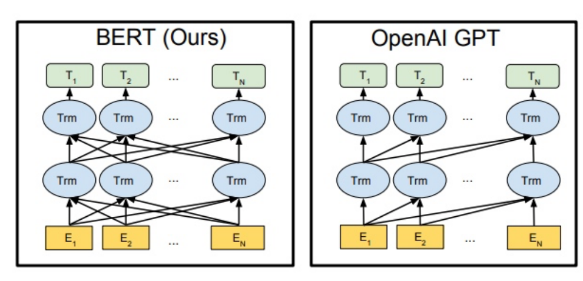
GPT 不是双向的，没有 masking 概念
Bert 在训练中加入下一个句子预测任务，所以它有 sengment 嵌入
- 预训练区别
- Bert的预训练任务包括MLM和NSP，旨在捕捉词汇级别和句子级别的语义
- GPT的预训练任务是语言建模，模型试图预测下一个词是什么，关注单一方向上的自回归预测
方案设计¶
-
情景：数据的命名实体已被标注，实体存在重叠和嵌入（比如武汉大学包含武汉这个实体），设计方案完成NER，写出**流程图**、模块说明、评价指标
-
情景：有中文和对应英文的数据集，设计机器翻译系统，写出**流程图**、模块说明、评价指标
2020级试卷整理¶
名词解释¶
- 自然语言
人类社会发展过程中自然产生的、约定俗成的语言
- 分词
将句子、段落等文本分解为有意义的字词单元，方便后续的处理分析
- 实体识别
指识别文本中具有特定意义的实体，主要包括人名、地名、机构名、专有名词等。简单来说，就是识别自然文本中的实体指称的边界和类别。
- 循环神经网络
循环神经网络 (RNN) 是一种使用序列数据或时序数据的人工神经网络
卷积神经网络（Convolutional Neural Networks, CNN）是**一类包含卷积计算且具有深度结构的前馈神经网络**，包含有输入层、卷积层、池化层、全连接层、输出层
- 语言模型
给定上下文，去预测下一个词或者下一段文本出现的概率
- 词向量
将一个词映射到一个向量空间，用多维向量表示（高维特征），这个向量就是词向量。使用多维特征来表示一个词，这样同种类的词汇就会有非常相似的特征
简答题¶
- 举出三个分类任务，说明应用场景
19年出现
- 简述卷积神经网络、循环神经网络，transformer模型的特点（区别）
处理数据类型：
- CNN： 用于处理网格化数据，如图像。
- RNN： 用于处理序列数据，如文本、时间序列。
- Transformer： 广泛用于序列到序列的任务，不受序列顺序限制。
模型结构：
- CNN： 主要包含卷积层和池化层。
- RNN： 具有循环结构，通过隐藏状态传递信息。
- Transformer： 引入了自注意力机制，使模型能够在不同位置之间建立关联。
并行性：
- CNN 和 Transformer： 可以在输入中进行并行计算。
- RNN： 由于循环结构，难以进行有效的并行计算。
梯度传播：
- CNN 和 Transformer： 相对较容易进行梯度传播。
-
RNN： 容易遇到梯度消失或梯度爆炸的问题。
-
简述word2vec训练词向量的原理和方法
-
原理
把每个词表征为K维的实数向量（每个实数都对应着一个特征，可以是和其他单词之间的联系），将相似的单词分组映射到向量空间的不同部分拥有差不多上下文的两个单词的意思往往是相近的
- 方法（见前面）
- CBOW
- Skip-gram
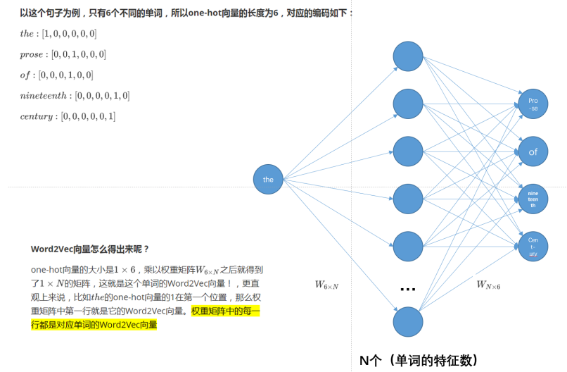
- 简述transformer中self-attention机制的原理和计算流程
见预训练模型部分
方案设计¶
-
情景：数据被标注了情感极性，设计一个情感分类方案，写出**流程图**、模块说明、评价指标
-
情景：文档数据集（未标注），句集（标注了实体），设计一个transformer模型，采用预训练和fine-tune构建一个实体识别系统，写出**流程图**、模块说明、评价指标